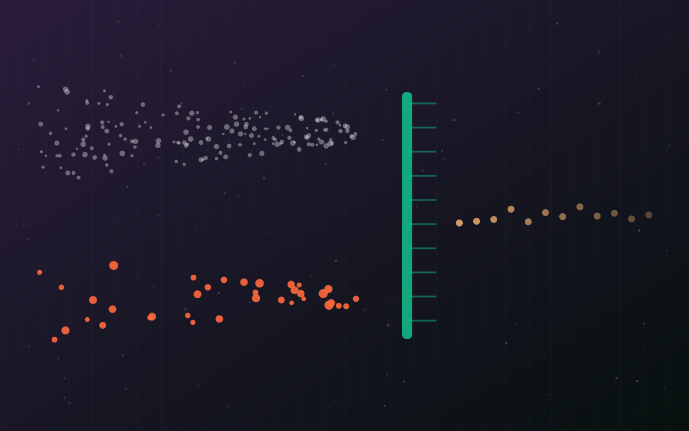

The Signal · Issue 07 · AI in Finance
Nubank tests its AI agents on synthetic customers before real ones. Updates now ship in 4.4 days, not 21.2
Nubank published how it screens changes to its card-support agents in simulation first. The live results are strong. The paper is also honest about the gap: its synthetic customers write about six times as much as real ones.

Facts are attributed and linked to their sources. The analysis and opinions are the author's own.
What it is
On 5 November Nubank described a research paper, Screen Before You Serve, on how it tests changes to customer-support AI agents. Synthetic customers with different profiles hold multi-turn conversations with a candidate agent, and the agent's tool calls are answered by a mock layer rather than by production systems. A change only goes to a live A/B test if it beats the current version on a criterion set in advance.
The bank studied two agents across the credit-card lifecycle. With simulation, each new version of its Card Management agent took an average of 4.4 days to develop, against 21.2 days per version for the earlier Card Delivery agent without it. In a live A/B test, Card Management had a self-service rate 4.9 percentage points higher and a transactional NPS 36.7 points higher than Card Delivery. Nubank notes that Card Management handles a broader set of tasks, so the gain reflects both the new agent and the process. The same method screened 29 open-weight model configurations across more than 16,000 simulated conversations. The chosen Qwen configuration, after prompt fixes, then raised self-service by 8.8 points in a live test and cut p95 latency by 25%, with no statistically significant change in customer satisfaction.
Why it matters
Most banks test a customer-facing agent in one of two weak ways: a few hundred hand-written scenarios, or a cautious live pilot on real customers. Nubank has added a middle layer, and published its limits. That second part is what makes the paper useful.
A simulator does not have to talk like a customer. It has to rank the next version correctly, and someone has to prove it does.
The limits are concrete. In the paper, 89% of real conversations contained at most 50 words from the customer, against 22% of simulated ones; the median real customer wrote 19 words and the median synthetic one 111. Annotators still mistook 15 of 50 simulated conversations for real ones. The simulator ranked the best and worst agent versions correctly but swapped the middle two. And because tools are mocked at the boundary, back-end behaviour, persistent state and side effects are not tested at all. Nubank also points out that self-service rate on its own does not prove a customer's issue was resolved.
In my view that is exactly the right framing for a regulated firm. A simulator is a screening test, like a credit scorecard, and it needs the same discipline: validate it against production outcomes, record the hypothesis and pass criterion before each change, and keep the live A/B test as the final check. Nubank says the pre-registered hypothesis for each change creates a record of why it was approved. Model-risk teams will want that record.
What I'd watch
- Whether Nubank extends the simulation to back-end behaviour and response times, which it names as the next step.
- Whether other banks publish simulator-versus-production validation, not just speed-ups.
- How supervisors treat simulation evidence in model-change approvals for customer-facing agents.
Sources
- Nubank cuts AI agent update cycles from three weeks to under five days by testing on simulated customers first Nubank newsroom, 5 Nov 2026.
- Screen Before You Serve: Simulation for Production Customer Experience AI Agents at 140M Scale Alcobaça, Rossell, Gupta et al., arXiv, 2026.